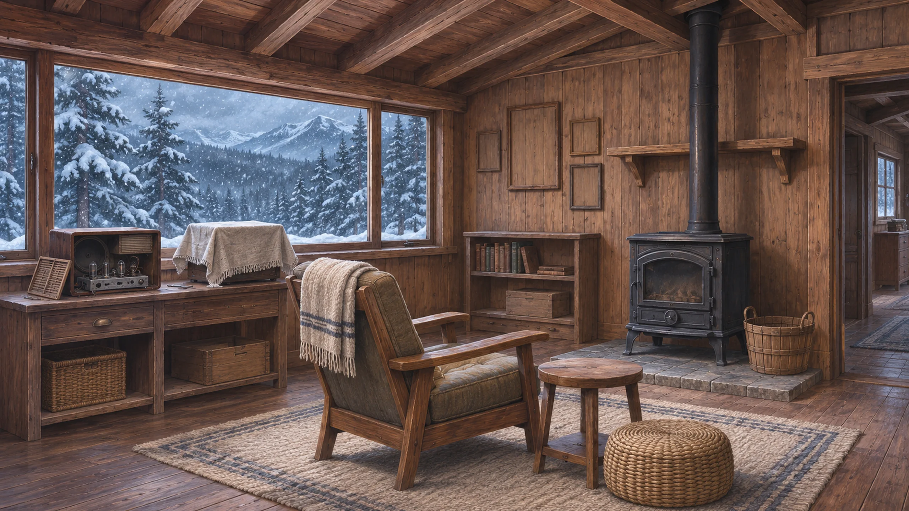
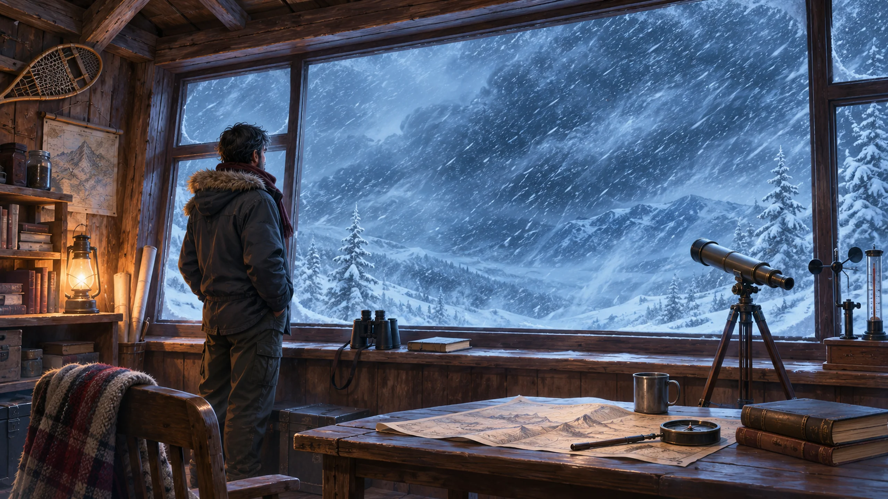
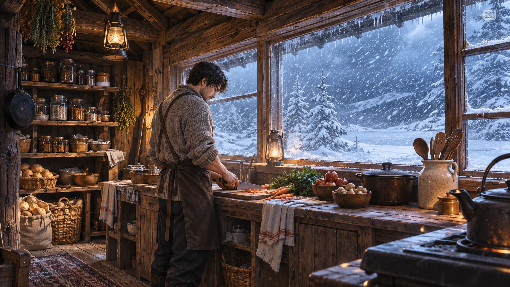
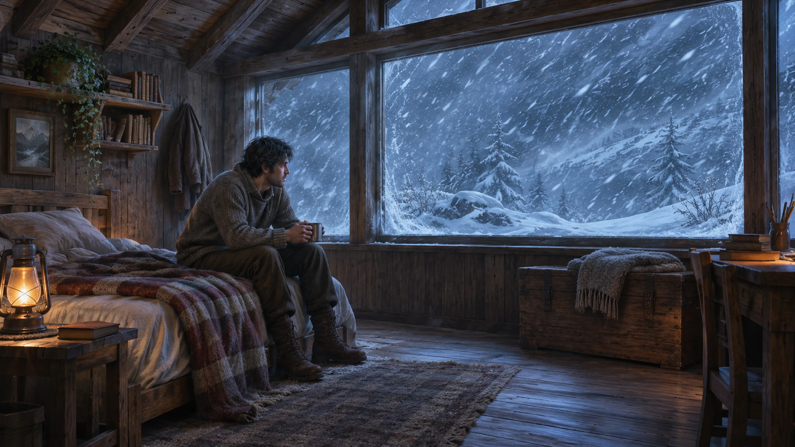

《风雪之外》· 四间高清插画视觉审图
高清画风参考、不是 G5 可分层正式开局背景。四间都保留大雪窗；切换只改变正在预览的房间。
原始生成尺寸约为 1672×941；2560×1440 WebP 属于展示导出。画面中部分角色、灯和物件已烘焙，玻璃未挖透明孔；需要经过真实 G5 中性板重绘才可作为游戏状态资产。

炉间
观测间
灶间
卧室高清画风参考、不是 G5 可分层正式开局背景。四间都保留大雪窗；切换只改变正在预览的房间。
原始生成尺寸约为 1672×941；2560×1440 WebP 属于展示导出。画面中部分角色、灯和物件已烘焙，玻璃未挖透明孔；需要经过真实 G5 中性板重绘才可作为游戏状态资产。

炉间
观测间
灶间
卧室